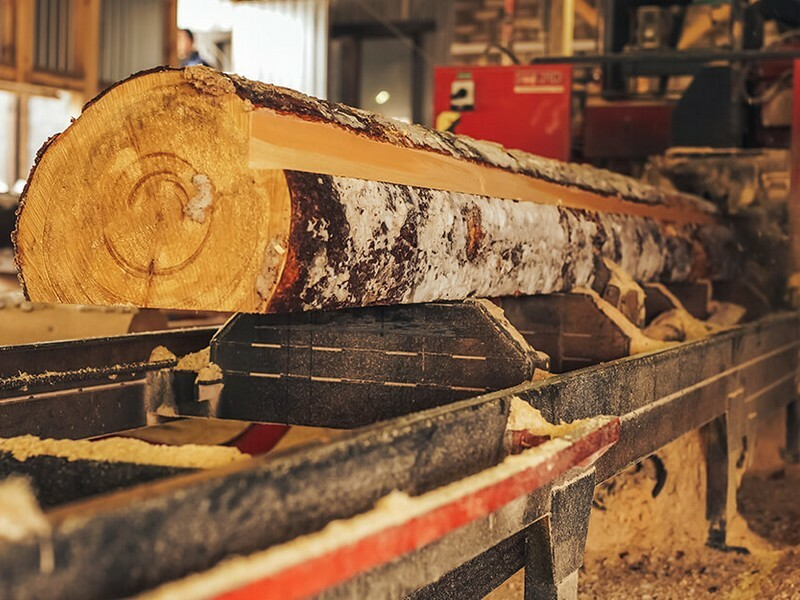
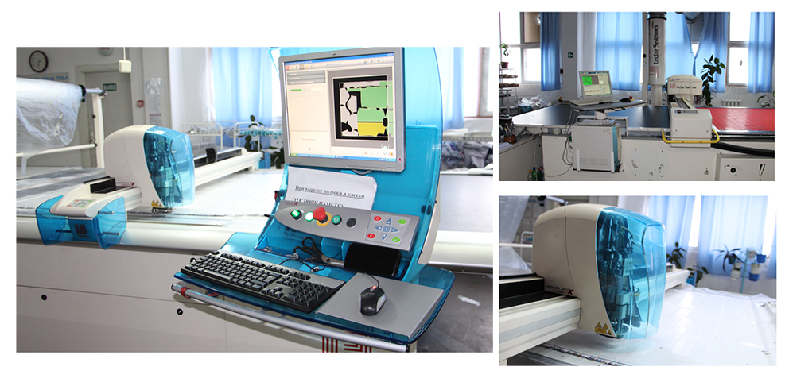

ИТ раскроя бревен
Визуальный методраскроя основывается на том, что оператор, оценивая на глаз геометрические размеры и качество хлыста, подлежащего раскряжёвке, даёт последовательно индивидуальные заказы на длину каждого отпиливаемого от него отрезка. При этом он одновременно учитывает требования ГОСТ, сортиментный план или спецификацию готовой продукции, а также скрытые пороки сырья, которые обнаружились в результате каждого пропила. При программном методе раскроя размеры хлыста определяются датчиками, при этом сразу выбирается полная программа его раскроя, которая выполняется автоматически. Программа раскроя хлыстов различных размеров составляется заранее с учётом требований стандарта, сортиментного плана и спецификации на готовую продукцию. Пороки сырья, вскрываемые в процессе раскряжёвки, при этом методе раскроя обычно не учитываются. Если оценка геометрических параметров и выбор программы раскроя выполняются автоматическими устройствами, то установка может работать автоматически (но сырьё должно быть отсортировано по качеству). Константный (“слепой ”) метод раскроя предусматривает раскряжёвку хлыстов на отрезки постоянной длины вне зависимости от размеров и качества сырья. Оператор в этом случае только наблюдает за работой установки, которая выполняет все операции автоматически. С точки зрения выхода деловых сортиментов, наилучшим является визуальный метод раскроя. Наиболее распространённые – полуавтоматические установки, работающие по визуальному методу. Основные группы раскряжёвочных установок.В зависимости от характера движения пилы и хлыста в процессе его распиловки раскряжёвочные установки делятся на три основные группы: установки с продольной подачей хлыста, установки с поперечной подачей хлыста и установки смешенного типа. Установки с продольной подачей делаются однопильными. Хлысты в этих установках перемещаются вдоль своей оси продольным транспортёром. При производстве каждого пропила хлыст останавливается на время, за которое диск производит пропил и возвращается в исходное положение. После этого хлыст передвигается на величину, равную длине отпиливаемого отрезка, и вновь останавливается. Ко второй группе раскряжёвочных установок относятся установки с поперечной подачей хлыста. В этих установках хлыст надвигается на пилы, перемещаясь перпендикулярно своей оси, при этом производится полная его раскряжёвка. Установки этой группы всегда делаются многопильными. В работе по раскряжёвке каждого хлыста участвуют все пилы, находящиеся в пределах его длины. Длины отпиливаемых отрезков всегда получаются постоянными. Установки такого типа называются раскряжёвочными установками с неподвижными пилами и поперечной подачей, или слешерами.
  1 страница 4 странца